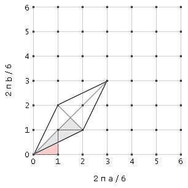

The only maximal affine Hadmard families stemming from the Fourier matrix $F_6$ are: $F_6^{(2)}(a,b)=F_6\circ{\rm EXP}\left(iR_{F_6^{(2)}}(a,b)\right)$ and $\left(F_6^{(2)}(a,b)\right)^{\rm T}=F_6\circ{\rm EXP}\left(i\left(R_{F_6^{(2)}}(a,b)\right)^{\rm T}\right)$, where $$F_6=\left[\begin{array}{llllll} 1& 1 & 1 & 1 & 1 & 1\\ 1& w & w^2& w^3& w^4& w^5\\ 1& w^2& w^4& 1 & w^2& w^4\\ 1& w^3& 1 & w^3& 1 & w^3\\ 1& w^4& w^2& 1 & w^4& w^2\\ 1& w^5& w^4& w^3& w^2& w \end{array}\right]:\quad w=\exp(2\pi i/6)$$ and $$R_{F_6^{(2)}}(a,b)=\left[\begin{array}{cccccc} \bullet & \bullet & \bullet & \bullet & \bullet & \bullet\\ \bullet & a & b & \bullet & a & b\\ \bullet & \bullet & \bullet & \bullet & \bullet & \bullet\\ \bullet & a & b & \bullet & a & b\\ \bullet & \bullet & \bullet & \bullet & \bullet & \bullet\\ \bullet & a & b & \bullet & a & b \end{array}\right]$$
Equivalence relations connecting different matrices within this family form a discrete group:
$F(a, b) \simeq F(a + 2/6, b + 1/6) \simeq F(a + 4/6, b + 2/6) \simeq F(a, - b)$
$F(a, b) \simeq F(a + 1/6, b + 2/6) \simeq F(a + 2/6, b + 4/6) \simeq F(- a, b)$
$F(a, b) \simeq F(b, a)$
$F(a, b) \simeq F(- a, - b)$
$F(a, b) \simeq F(b - a, - a) \simeq F(- b, a - b)$
Thus the parameter space taken as a square in the $(a, b)$ plane is divided into $144$ equivalent triangles of equal area; the lattice in the background are the $6^{\rm th}$ roots. A convenient choice of fundamental region of inequivalent Hadamard matrices is a triangle of corners $[0, 0],$ $[1/6, 0]$ and $[1/6, 1/12]$ (red one below). More information in [43].
